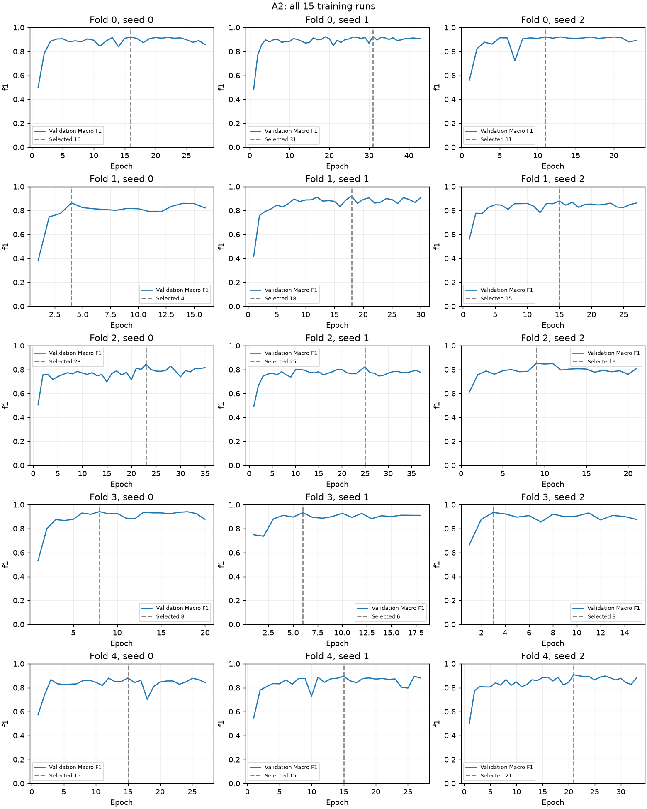

모델 설계 4 / 7장
모델 구조와 학습
일곱 CNN은 모두 128×3 가속도 입력에서 여섯 행동의 확률을 예측한다. 비교하는 구조들은 시간 방향의 패턴을 찾는 합성곱, 기존 특징을 전달하는 residual, 특정 특징과 시점에 가중치를 주는 attention을 조합한다.
CNN 부품이 하는 일
- 기본 1차원 CNN
- Conv1D 필터가 시간축을 움직이며 가까운 시점들의 변화를 묶어 특징을 만든다. A0의 합성곱 블록은 길이 5 필터 두 층과 Batch Normalization·ReLU를 사용하며, Max Pooling으로 시간축 길이를 절반으로 줄인다.
- Residual (ResNet)
- 블록이 계산한 특징 F(x)에 입력 x를 더해 ReLU를 적용한다. 이전 특징과 기울기가 지나가는 경로가 추가된다. 이 구현은 입력과 출력의 모양이 같아서 덧셈에 별도 가중치가 필요 없다.
- Inception
- 1×1 합성곱으로 64채널을 16채널로 줄인 뒤, 길이 3·7·15인 세 필터 분기에서 서로 다른 시간 폭의 패턴을 추출한다. 별도 pooling 분기까지 네 출력을 이어 붙여 64채널을 만든다.
- SE
- 채널별 시간 평균을 구하고 Dense 층(64→8→64)과 sigmoid로 가중치를 만든다. 같은 채널의 모든 시점에는 같은 값을 곱해 구간별로 중요한 특징의 비중을 조절한다.
- CBAM
- 채널별 시간 평균과 최댓값으로 채널 가중치를 계산한다. 이어 각 시점의 채널 평균과 최댓값을 길이 7인 필터에 넣어 시간 가중치를 계산한다. SE와 채널 가중치 계산도 달라 두 모델의 점수 차이에 두 변화가 함께 반영된다.
- Depthwise 분리 합성곱
- 각 채널 안에서 시간 패턴을 찾은 뒤 1×1 합성곱으로 채널을 섞는다. 길이 15, 입력·출력 16채널인 분기는 편향을 제외하면 일반 합성곱 가중치 3,840개를 분리 합성곱 가중치 496개로 줄인다.
일곱 구조와 Random Forest 참조선
| 모델 | 구성 | 비교에서 바뀌는 부분 | 파라미터 |
|---|---|---|---|
| A0 | 기본 CNN | 64채널 시작 층과 기본 합성곱 블록 두 개 | 84,870 |
| A1 | 기본 CNN + residual | A0의 기본 블록에 입력을 더하는 연결 추가 | 84,870 |
| A2 | Inception | A0의 기본 블록을 여러 시간 폭의 분기로 교체 | 36,806 |
| B1 | Inception + residual | A2에 입력을 더하는 연결 추가 | 36,806 |
| B2 | B1 + SE | 입력을 더하기 전에 SE로 채널 가중치 적용 | 38,998 |
| B3 | B1 + CBAM | 입력을 더하기 전에 채널·시간 순으로 가중치 적용 | 39,028 |
| B4 | Depthwise Inception + residual | B1의 세 시간 합성곱 분기를 분리 합성곱으로 교체 | 15,878 |
| RF | 통계 특징 + Random Forest | 윈도우의 특징 47개를 트리 300개로 분류하는 별도 참조선 | — |
CNN은 마지막에 Global Average Pooling으로 시간 방향의 특징을 요약하고, Dropout과 Softmax 분류층을 거친다. RF는 x·y·z축과 합성 가속도 크기에서 각각 평균, 표준편차, 백분위수, 인접 시점 차이 등 통계량 11개를 구했다. 여기에 축 쌍의 상관계수 3개를 더해 47개 특징을 만들었다. RF는 같은 정제 데이터와 사용자 분할에서 원래 가속도 값으로 특징을 추출하고 고정된 트리 설정으로 학습했다.
공통 학습 설정과 가중치 선택
개발 CNN 학습은 Colab T4에서 TensorFlow 2.21.0으로 실행했다. 한 epoch가 끝날 때마다 검증 fold의 Macro F1을 계산했다. 점수가 12 epoch 동안 좋아지지 않으면 멈춘 뒤 최고 점수 시점의 가중치를 복원했다. 개발 점수는 이 가중치 선택에 쓴 검증 사용자에서 계산했다.
| 항목 | 설정 |
|---|---|
| 옵티마이저 | Adam, 학습률 0.001 |
| 손실 함수 | Sparse categorical cross-entropy |
| 배치 크기와 Dropout | 64, 0.4 |
| Epoch 상한과 조기 종료 | 최대 100 epoch, 검증 Macro F1 기준 patience 12 |
| 실행 반복 | 모델 하나당 5 fold × seed 0·1·2, 총 15회 |

최종 재학습에서는 각 CNN의 개발 최적 epoch 15개의 중앙값을 반올림해 학습 횟수를 고정했다. A2는 15 epoch, A0는 13 epoch로 개발 30명 전체에서 seed별 재학습했다. RF는 기존 설정을 유지했고, 보류 데이터는 학습이 끝난 뒤 평가에 사용했다. 최종 재학습과 테스트 결과